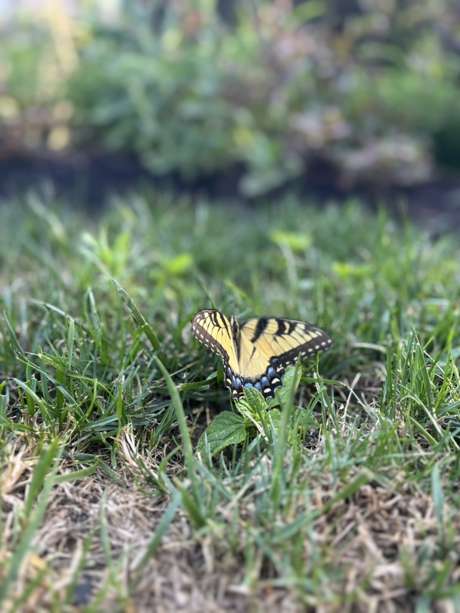
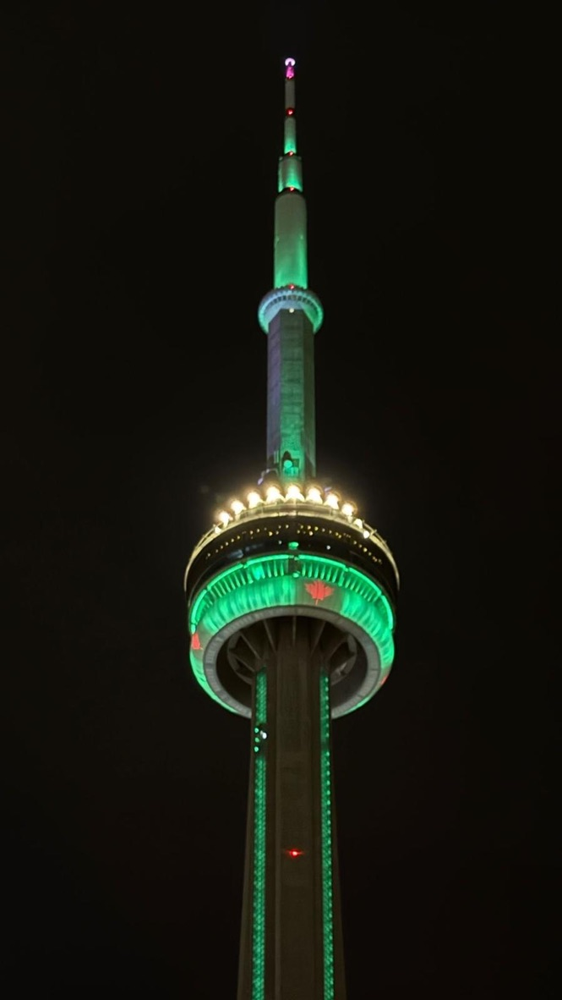
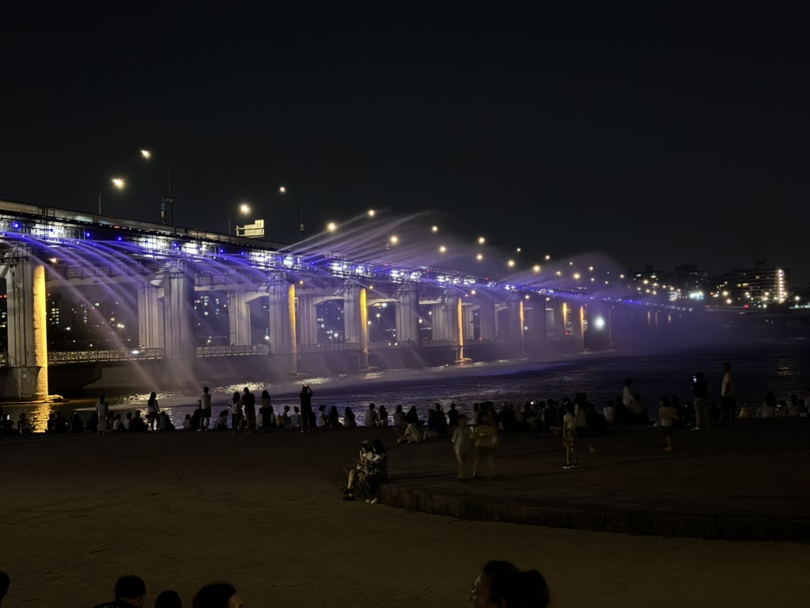
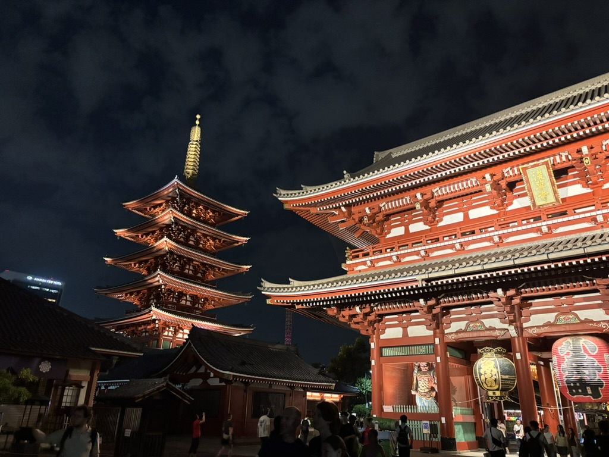

My top 5 fav photos I took
First, I am Ilan and I am 15
First a picture of a butterfly

Second, a cool tower in toronto

Third, a really cool bridge in South Korea

Fourth, a realy cool temple in Japan

Finally, the beautiful city of Shibuya, Japan